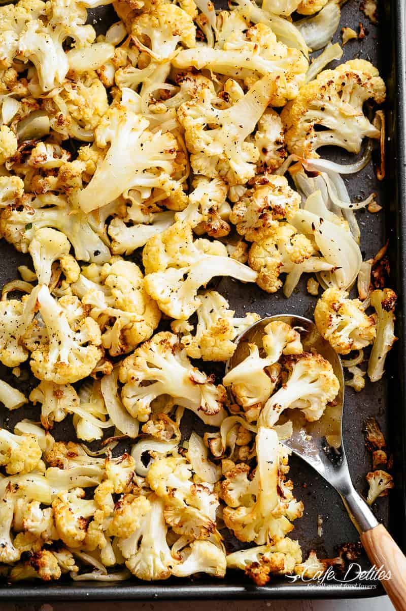

Special Cauliflower

Description
This is a special cauliflower dish that will blow your mind!
Ingediants
- 1 Head of Cauliflower
- 2 Eggs
- 1 Bag of Parmasean Cheese
- 2 Tbsp Butter
Steps
- Boil the cauliflower until cooked, about 10 minutes
- Beat the eggs, mix in parmasean to create a slurry
- Cut the cauliflower into bite sized pieces
- Coat the cauliflower in the slurry
- Melt the butter in a skillet over medium low heat
- Fry the cauliflower, turning constantly until golden brown